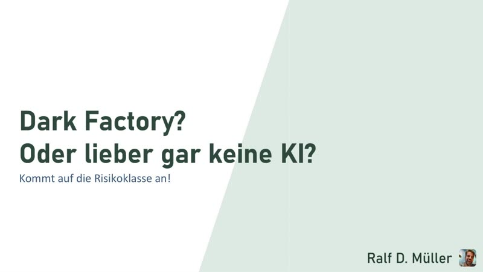

Dark Factory? Kommt auf die Risikoklasse an.
„Ich mache Dark Factory. Du nicht. Und das ist gut so.“
Die Branche steht unter FOMO. Die einen wollen KI sofort überall, die anderen verbieten sie im Projekt komplett. Beide urteilen pauschal, und beide liegen daneben. Ob KI im Code Hebel oder Risiko ist, hängt nicht vom Hype ab, sondern vom Anwendungsfall. Eine statische Landing Page vibe-code ich blind. Eine Firmware für medizinische Geräte niemals.
Mit dem vibe-coding-risk-radar ordnen wir Software nach Risikoklassen ein und sehen: Ein Pauschalverbot ist genauso unsinnig wie pauschales Mitmachen. Und weil Vibe Coding damit nicht automatisch unverantwortlich ist, geht es im zweiten Teil um Mitigations. Zu jedem Risiko gibt es eine Gegenmaßnahme, und mit den passenden lässt sich eine Risikoklasse Stück für Stück Richtung Autonomie verschieben.
Wer danach weiß, wie er seinen eigenen Use Case einordnet, hört auf, über Hype zu streiten, und fängt an, KI dort einzusetzen, wo sie trägt.
Für wen
Für Entwicklungs- und Architekturteams in Unternehmen, die KI-Coding-Agenten einführen und klären müssen, wie viel sie ihnen überlassen können.
Kernaussagen
- KI im Code ist weder Hype noch Tabu. Es kommt auf die Risikoklasse an.
- Der Risk Radar macht aus einer Glaubensfrage eine Engineering-Entscheidung. Er bewertet einen Use Case in fünf Dimensionen: Code-Typ, Sprachsicherheit, Deployment-Kontext, Datensensibilität und Blast Radius.
- Zu jedem Risiko gibt es eine Gegenmaßnahme. Das Harness Coverage Wheel sammelt sie als Schichten der Fehlerkorrektur, vom Compiler bis zum Chaos Engineering.
- Code Review skaliert nicht mehr. Der Mensch prüft nicht jede Zeile, sondern legt das Umfeld fest, in dem die KI arbeitet: Human on the Loop statt Human in the Loop.
- Dark Factory für die Landingpage, Handarbeit mit Netz fürs Herzgerät. Beides ist richtig.
Video und Material
Zwei Stimmen sprechen den Vortrag mit allen Folien durch, rund 17 Minuten. Risk Radar, Harness Coverage Wheel und eine Textfassung für Ihre KI finden Sie auf der Seite zum Vortrag.

Video auf YouTube ansehen · English version
Sie möchten diesen Vortrag für Ihre Konferenz oder Ihr Unternehmen buchen?
Kontakt aufnehmen